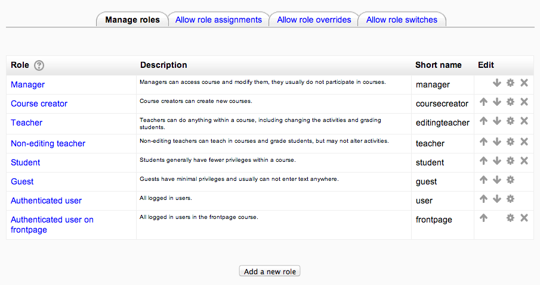
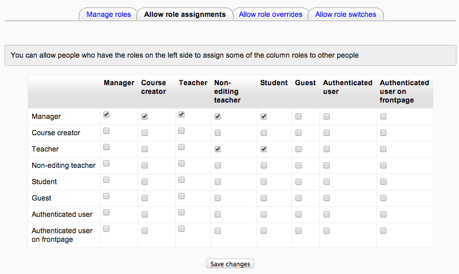

A role is a collection of permissions defined for the whole system that you can assign to specific users in specific contexts. The combination of roles and context define a specific user’s ability to do something on any page. The most common examples are the roles of student and teacher in the context of a course.
For example, you may have a role called ‘Trainer’ set up to allow trainers to do certain things (and not others), once this role exists you can assign it to someone in a course to make them a ‘Trainer’ for that course. You could also assign the role to a user in the course category to make them a ‘Trainer’ for all the courses under that category, or assign the role to a user just in a single forum, giving that user those capabilities just in that forum.
You have three permission levels for each task
Allow: The role is assigned in the stipulated context.
Prevent: By choosing this you are removing permission for this capability, even if the users with this role were allowed that permission in a higher context.
Prohibit: This is rarely needed, but occasionally you might want to completely deny permissions to a role in a way that can not be overridden at any lower context. A good example of when you might need this is when an admin wants to prohibit one person from starting new discussions in any forum on the whole site. In this case they can create a role with that capability set to ‘Prohibit’ and then assign it to that user in the site context.
Managing overall role capabilities can be done by an administrator using Settings > Site administration > Users > Permissions > Define roles. This is the place to add custom roles or modify existing roles.
The ‘Manage roles’ tab contains a list of roles on your site. The Edit column contains icons for editing and deleting roles, and for moving them up or down in the list (affecting the way that roles are listed around Moodle).
To edit a role:
- Go to Settings > Site administration > Users > Permissions > Define roles.
- Click the edit icon opposite the role you want to edit. For example “student”.
- On the editing role page, change permissions as required for each capability.
- Scroll to the bottom of the page and click the “Save changes” button.
To add a new role:
- Go to Settings > Site administration > Users > Permissions > Define roles.
- Click ‘Add a new role’ on the ‘Manage Roles’ page.
- On the ‘Add a new role’ page, give the role a name.
- Give the role a meaningful short name, the short name is necessary for Moodle plugins they refer to the system roles.
- Give the role a description (optional).
- You can base a new role on the permissions set for an existing role, so that you do not start from scratch. Select from the Legacy role type option to do this.
- Set the required permissions.
- Click ‘Add a new role’ to save your new role.
To reset a role back to the default permissions:
- Go to Settings > Site administration > Users > Permissions > Define roles.
- Click on the name of the role, for example “student”.
- Click the ‘Reset to defaults’ button.
Note that if you have students who have been given extra permissions at course and/or activity levels (such as forum ratings), then they will no longer be able to do this once the role has been reset to its default. A teacher would need to go back and set up these extra permissions in the course/activity levels again.
The “Allow role assignments” tab allows (or does not allow) a specific role to be able to assign specific roles to a user.
Enabling teachers to assign other teachers
By default, teachers can only assign other users the roles of non-editing teachers, students and guests. If you want teachers to be able to assign other teachers in their course, you can allow the role assignment:
- Click on Settings > Site administration > Users > Permissions > Define roles.
- Click the Allow role assignments tab.
- Click the checkbox where the teacher row and column intersect.
- Click the “Save changes” button.
The “Allow role overrides” tab allows (or does not allow) a specific role to be able to override specific roles for a user. For example, it might allow a teacher role to override a student’s role to a non-editing teacher’s role. Note : Note that the settings only apply to roles that have the capabilities moodle/role:override or moodle/role:safeoverride allowed.
The “Allow role switches” tab allows (or does not allow) a specific role to be able to temporarily change their role to another specific role. For example, this might allow a users assigned to a custom role in a course to see “Student” in the Settings > Switch role list.
Note: the selected role must also have the moodle/role:switchroles capability to be able to switch.